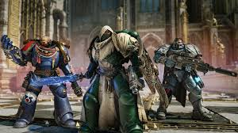

co je to Warhammer 40k
Warhammer 40,000 (zkráceně Warhammer 40k) je populární stolní strategická hra na hrdiny, kterou vydala společnost Games Workshop. Hra se odehrává ve fiktivním vesmíru vzdálené budoucnosti, kde je lidstvo na pokraji zkázy a neustále bojuje o přežití v galaxii plné válek, chaosu a destrukce. Svět Warhammeru 40k je temný a brutální, kombinující prvky sci-fi a fantasy, a zahrnuje množství ras a frakcí, jako jsou lidští Adeptus Astartes (vesmírní mariňáci), temní a démoničtí Chaos Space Marines, mimozemské rasy jako Eldari nebo T’au, a hordy děsivých bytostí, jako jsou Tyranidi či Necronové.
Hráči si v této hře vytvářejí a malují vlastní armády miniatur, které následně používají v taktických bitvách proti soupeřům. Každá figurka má své specifické vlastnosti a schopnosti, což dává hře hlubokou strategickou vrstvu. Bojiště je modulární, což znamená, že si hráči mohou vybrat prostředí od zdevastovaných měst až po mimozemské planety. Bitvy se odehrávají podle pravidel, která zahrnují házení kostkami, měření vzdáleností a plánování tahů, což přispívá k napínavým a dynamickým střetnutím. Kromě samotné hry je Warhammer 40k známý svým důrazem na umění a kreativitu – od detailního malování miniatur po propracovanou stavbu terénu.
Unikátní je také příběhové pozadí Warhammeru 40k, které je vyprávěno prostřednictvím knih, komiksů, videoher a dalších médií. V tomto vesmíru existuje pouze válka – lidstvo je ovládáno fanatickým režimem Imperium of Man, vedeným božským Císařem, který je udržován naživu pouze za pomoci technologie a temných rituálů. Každá frakce má své vlastní motivace a příběh, přičemž klíčovým tématem je boj mezi dobrem a zlem, přičemž žádná ze stran není zcela čistá. Tato bohatá historie a hluboký lore přitahují fanoušky z celého světa a činí z Warhammeru 40k nejen hru, ale i rozsáhlý kulturní fenomén.
